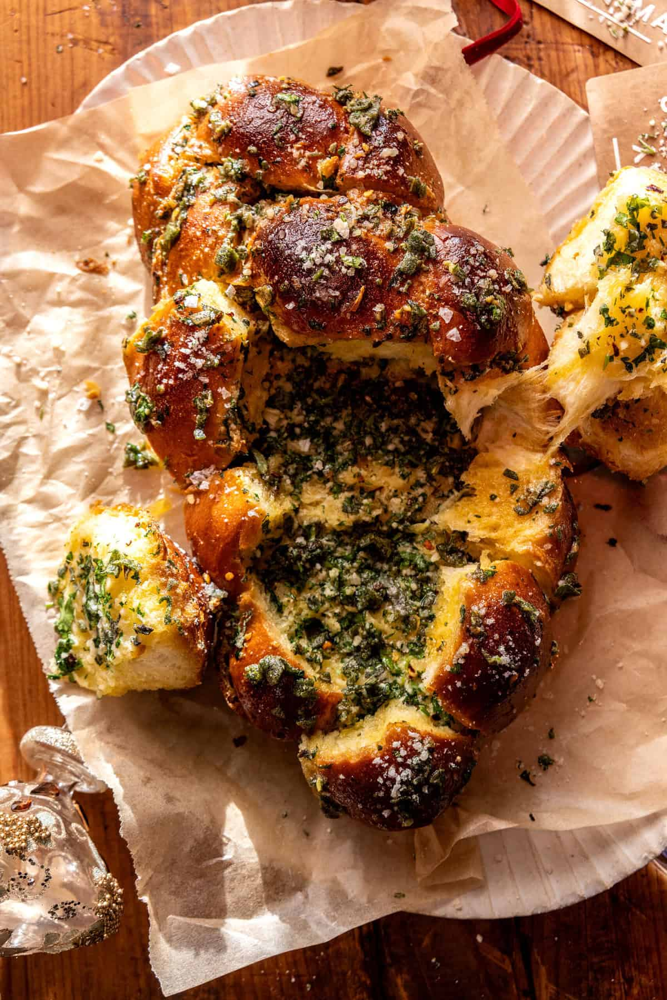

Light, soft, buttery, garlicky, perfectly salted—and completely delicious. Made with store-bought challah, this easy house-style garlic bread bakes up golden and irresistible. Serve it warm with a sprinkle of freshly grated cheese and flaky sea salt. Always impressive, always a hit, and the perfect pull-apart bread for all your upcoming holiday dinners.
Make sure to use salted butter. Let it get very soft, then mix in the grated garlic, parsley, sage, garlic powder, and chili flakes. If sage isn’t your thing, thyme or oregano work well too. Personally, I love the sage — it’s unexpected but so delicious.
Place the challah on a baking sheet. Using a serrated knife, carefully cut it in half horizontally to create two even halves. Spread the cut sides generously with the garlic butter, then sprinkle with Parmesan. Sandwich the halves back together to re-form the loaf. Next, cut the challah into cubes. You can do this by slicing straight down vertically or by cutting around the bumps of the braid — just be careful not to cut all the way through the bottom so the loaf stays intact.
Spread the remaining garlic butter over the top of the challah. Cover the bread and bake until warmed through and very soft inside. Remove the foil and continue baking for a few more minutes, until the top is deeply golden and lightly crisp while the inside stays pillowy and tender. When the challah comes out of the oven, finish it with a sprinkle of Pecorino or extra Parmesan and a pinch of flaky sea salt. Pull it apart while it’s hot and enjoy — it’s completely irresistible!